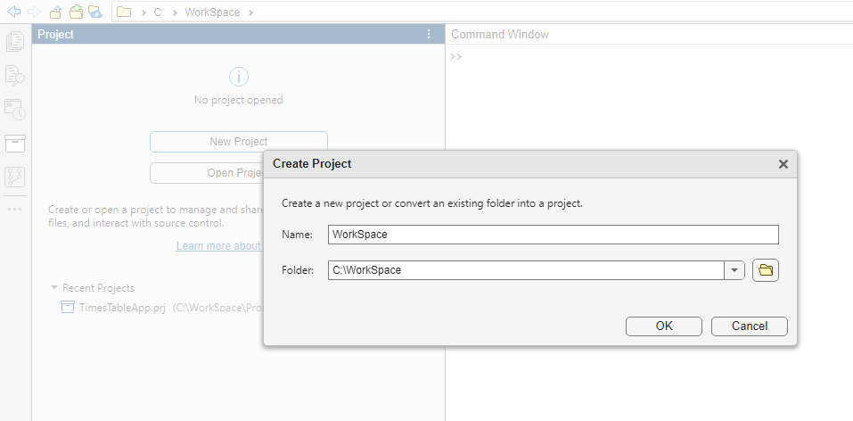
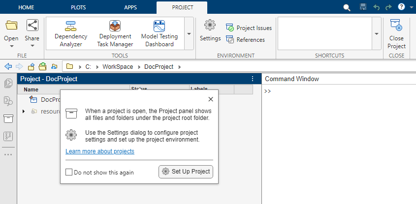
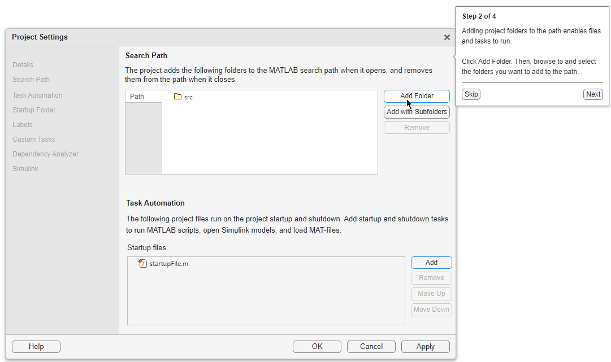
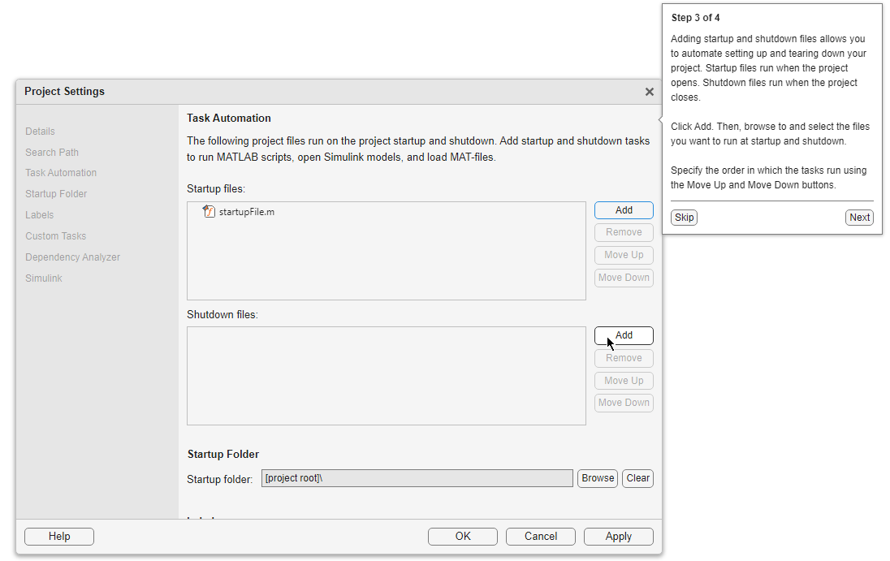
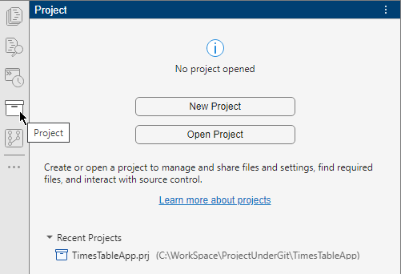
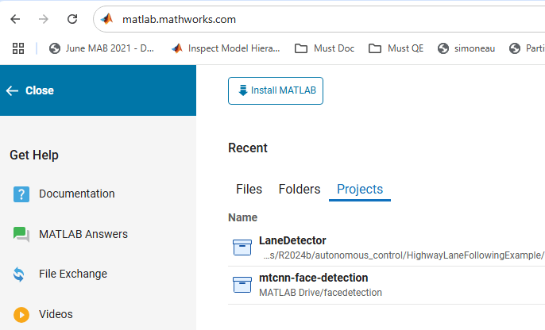

Create Projects
Create projects in MATLAB® to organize, manage, and share your work with others. Projects help standardize settings and environments to maintain consistency across different users and operating systems.
What Are Projects?
A project is a scalable environment where you can manage MATLAB and Simulink® files, data files, requirements, reports, spreadsheets, tests, and generated files together in one place.
As a design grows, managing referenced files and dependencies becomes more complicated. Using projects reduces the complexity of managing large folder hierarchies and helps you work and collaborate. You can use projects to:
Manage the MATLAB search path and dependencies when the project is open.
Find all files and dependencies required by your project using the Dependency Analyzer app.
Manage and share files and settings using tasks automation that run on startup and shutdown, and shortcuts for frequent tasks.
Upgrade your design to the latest release.
Run integrity checks and identify shadowed files and files with unsaved changes.
Collaborate with others.
Use the MATLAB source control integration (Git™ and SVN).
Use classification labels to organize files and label test files. The Test label enables you to easily identify your test suite and run tests easily on CI servers.
Review your work by peers using the Comparison Tool.
Reuse code using referenced projects and enable modular development and individual component release.
Track, share, package, and deploy your design.
Create project templates to standardize project folder hierarchies.
Create Project from Existing Folder
To create a project from an existing folder, follow these steps.
On the Home tab, click New > Project. Alternatively, click New Project from the Project panel.
If you do not have the Project panel in the sidebar, add it using the Open more panels button (
 ) in the sidebar.
) in the sidebar.In the Create Project dialog box, enter a project name, select the existing folder you want to create the project in, and click OK.
MATLAB adds all the files and folders to the new project.
If you select an empty folder, MATLAB creates a blank project. To add files to the project, see Add Files to Project.
By default, MATLAB prepopulates the Folder field with the current folder you have open in the Files panel. You can specify the default folder for new project creation in the project preferences. For more information, see Configure Global MATLAB Projects Settings.

Project Definition Files
The files in the resources/project or
.SimulinkProject folder are project definition files generated when you
first create or make changes to your project. Project definition files specify the files added
to your project. Project definition files also specify metadata changes such as changes to
shortcuts, labels, and project descriptions.
You do not need to view project definition files directly, except when the source control tool requires a merge. The files are shown so that you know about all the files being committed to the source control system.
Any changes you make to your project generate changes in the
resources/projectfolder. These files store the definition of your project in XML files with a format that is subject to change.When you use source control to track project files, you must commit changes to project definition files.
Starting in R2020b, the default project definition file type is Use multiple project files (fixed-path length). To change the project definition file management from the type selected when the project was created, use
matlab.project.convertDefinitionFiles.matlab.project.convertDefinitionFilespreserves the source control history of your project.Warning
To avoid merge issues, do not convert the definition file type more than once for a project.
To stop managing your folder with a project and delete the
resources/projectfolder, usematlab.project.deleteProject.
 For releases before R2020b - Instructions to change project definition file type
For releases before R2020b - Instructions to change project definition file type
Set Up Project
After you create or open a project, the Project panel opens and shows all files and folders under the project root folder. A pop-out helps you set up the project.
Click Set Up Project to begin setting up your project. The setup guide takes you through the minimal recommended setup, such as updating the project name and description and setting the project path and the startup and shutdown actions.
The project setup guide dialog box appears every time you open the project. To disable the project setup guide altogether, on the Home tab, in the Environment section, click Settings. In the MATLAB > Project section, clear Show the welcome dialog after opening a project.
Note
If you dismiss the project setup guide dialog box, when you are ready to set up your project, in the Project toolstrip, click Settings. For more information about project settings, see Manage Project Settings, Path, Labels, and Startup and Shutdown Tasks.

In Step 1 of 4, you can edit the project name and add a description. Include information you want to share with other project users. Then, click Next.
In Step 2 of 4, you can choose folders to add to the project path. Adding project folders to the project path ensures that all users of the project can access the files within them. MATLAB adds these folders to the search path when you open the project, and removes them when you close the project.
To add all the folders in project folder to the project path, click Add with Subfolders and then select the root project folder containing all your subfolders.
After specifying the project path, click the Next button to continue.
You can edit the project path at anytime in Project Settings. For more information, see Specify Project Path.

In Step 3 of 4, you can specify startup and shutdown files. Startup files help you set up the environment for your project. Shutdown files help you clean up the environment when you are done. Use shutdown files to undo the setup that occurs in startup files.
Use the Add and Remove buttons to manage the startup and shutdown file lists. The files run from the top down. If the order in which the files run is important, use the arrow buttons to move files up or down in the list.
After specifying the project startup and shutdown tasks, click the Next button to continue.
You can specify startup and shutdown files at anytime in Project Settings. For more information, see Automate Startup and Shutdown Tasks.

In Step 4 of 4, for the setup to take effect in your new project, click Finish Setup.
Close the dialog box by clicking OK.
Add Files to Project
When you create a blank project, the Project panel shows only the project
definition files stored in the resources folder.
To create a new file or folder in the project, in the Project panel, right-click in the white space and select from the available options under New. MATLAB creates and adds the file or folder to the project.
To add existing files to a project, use one of these options.
Copy and paste files from a file browser into the Project panel. This action adds the files automatically to the project.
Drag folders and files from the Files panel into the Project panel. In the Project panel, select the files and folders you want to add. Then, right-click and select Add to Project or Add Folder to Project (Including Child Files).
Tip
To make file operations easier between the Files and Project panels, group the panels. To group panels, in the sidebar, drag the Project icon onto the Files icon.
To add and remove project files programmatically, use the addFile function.
You might not want to include all files in your project. For example, you might want to exclude derived files in the project root folder, such as code generation files and folders. To determine which files need to be included in your project, see Analyze Project Dependencies.
Open Project
To open an existing project, on the Home tab, click
Open and browse to an existing project
.prj file. Alternatively, in the Files panel, double-click
the project .prj file.
Note
To avoid conflicts, you can have only one project open at a time. If you open another project, any currently open project closes.
To open a recent project, use any of these methods:
On the Home tab, click the Open arrow and select your project under the Recent Projects list.
In the Project panel, select your project under the Recent Projects list. If you do not have the Project panel in the sidebar, add it using the Open more panels button (
) in the sidebar.
In the Simulink Editor, if an open model, library, or chart belongs to a project, on the Simulation tab, select Project > View Project.
When you open a project, you are prompted if loaded files shadow your project model files. To avoid working on the wrong files, close the shadowing files. For more information, see Manage Shadowed and Dirty Model Files and Other Project Files (Simulink).
In MATLAB Online™, in MATLAB Home, select your project from the Projects list in the Recent section.

Unsafe Content Warning
When you open a project from an unknown source for the first time, MATLAB warns that the content might be unsafe. Projects from unknown sources include projects you clone from a remote repository, download, or receive as an archive.
A project can be configured to execute code automatically on startup and change the MATLAB path. To protect yourself from malicious attacks, make sure you trust the sender or the author of the project before you open the project.
After you open a project for the first time, MATLAB remembers your choice and does not show a warning for the same project again. If you open and trust a project that references other projects, MATLAB trusts all projects in the hierarchy.
To disable these warnings altogether, on the Home tab, in the Environment section, click Settings. In the MATLAB > Project section, clear Warn when opening projects from unknown sources.
Other Ways to Create Projects
There are several alternative ways to create a project. You can:
Create a project from an archived project. For more information, see Create Project from Archived Project.
Create a project from the Dependency Analyzer graph. For more information, see Create Project from Dependency Graph.
Clone a project from an existing source control repository. For more information, see Use Source Control with MATLAB Projects.
Create a project using a Simulink template.
If you have Simulink, you can use a Simulink template to create and reuse a standard project structure. For more information, see Create New Project Using Templates (Simulink).
Create a project from a Simulink model.
If you have Simulink, you can create a project from a Simulink model and all the files that it requires. For more information, see Create Project from Model (Simulink).
Create Project from Archived Project
Some projects are shared as archived projects. An archived project is useful for sharing with users who do not have access to a connected source control tool. To view and edit the contents of an archived project, create a new project from the archived project.
To create a new project from an archived project, follow these steps.
In the Files panel, double-click the MLPROJ archived project file.
In the Extract Project to dialog box, specify the location for the new project and click Select Folder. For example,
C:\.WorkSpace\myNewProject
Alternatively, in the Files panel, right-click the MLPROJ archived project file and select Extract here.
The new project opens automatically. The current folder,
C:\,
contains the imported project folders and files.WorkSpace\myNewProject
If the archived project contains a referenced project, MATLAB also imports the referenced project and stores it in a folder
relative to the main project folder. For example,
C:\.WorkSpace\ReferencedProject
Create Project from Dependency Graph
When you run a dependency analysis for a folder or a file, you can create a project that includes all dependencies from the dependency graph.
Open the Dependency Analyzer. In MATLAB, on the Apps tab, under MATLAB, click the Dependency Analyzer icon .
Select the files or folder you want to analyze using the Open Folder and the Open Files buttons.
To create a project from all the files displayed in the dependency graph, in the Dependency Analyzer toolstrip, in the Export section, click Create Project. In the Create Project window, click OK. The Dependency Analyzer creates a project and reloads the graph.
You can also create a project from a subset of files in the graph. Select the files, then click Create Project. The Dependency Analyzer includes the selected files and all their dependencies in the project.
See Also
openProject | matlab.project.createProject | matlab.project.extractProject | addFile | addFolderIncludingChildFiles | addPath | addStartupFile | addShutdownFile
See Also
Topics
- Manage Project Files
- Analyze Project Dependencies
- Share Projects
- Use Source Control with MATLAB Projects
- Create New Project Using Templates (Simulink)
- Create Project from Model (Simulink)
- Create and Edit Projects Programmatically